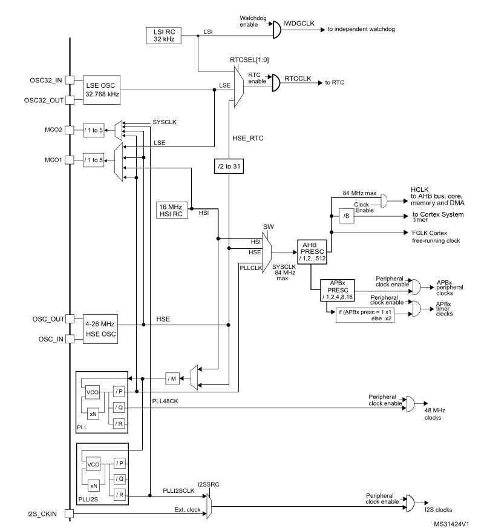
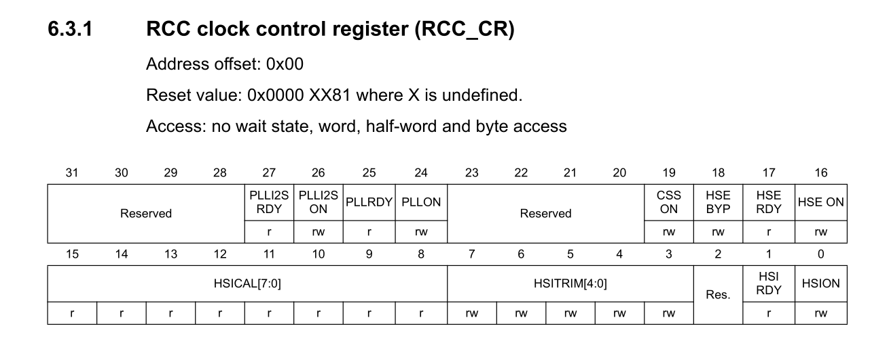
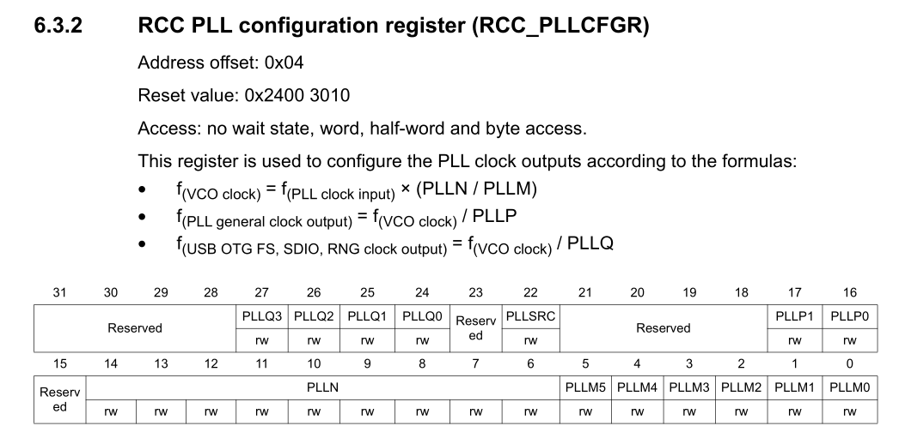
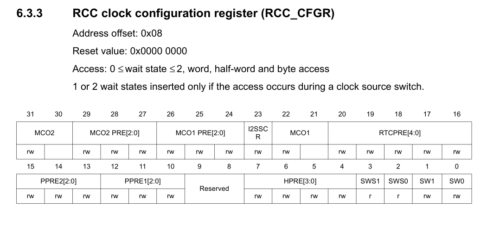
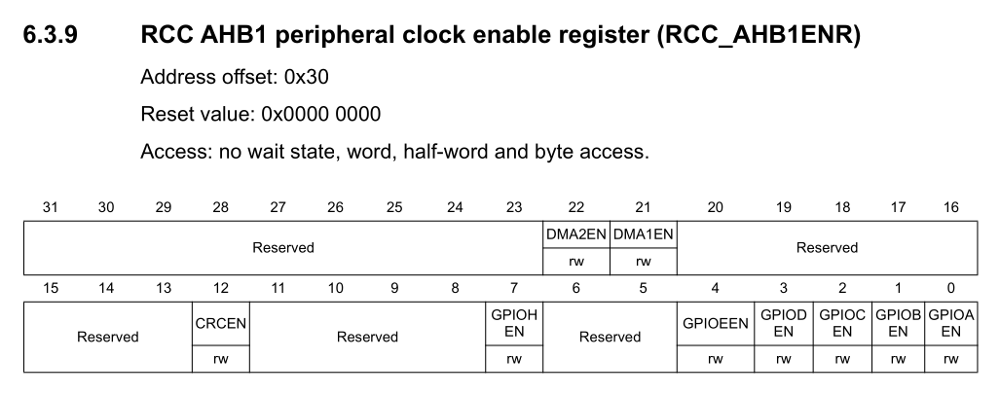

Reset and Clock Control (RCC)¶
1. Overview¶
The Reset and Clock Control (RCC) peripheral is the heartbeat of the STM32 microcontroller. On modern ARM Cortex-M microcontrollers, power efficiency is a primary architectural goal. Consequently, every peripheral is clock-gated (powered off) by default.
Before you can read or write to any peripheral register — whether it is a GPIO port, a timer, an ADC, or a UART controller — you must first enable its clock through the RCC. Attempting to access a peripheral's registers while its clock is disabled results in either silent failure (writes are ignored) or a BusFault / HardFault.
In our example we will set the system clock(HCLK) to be 24MHz.
2. The STM32F401 Clock Tree¶
The STM32F401CCU6 can operate at clock frequencies up to 84 MHz. To achieve this, it features several internal and external clock sources routed through a Phase-Locked Loop (PLL).

2.1 Clock Sources¶
| Source | Name | Typical Frequency | Characteristics |
|---|---|---|---|
| HSI | High-Speed Internal | 16 MHz | Built-in RC oscillator. Available instantly at power-up; slightly temperature-sensitive. |
| HSE | High-Speed External | 4–26 MHz (25 MHz on BlackPill) | External quartz crystal. High accuracy, required for stable USB and precision timing. |
| PLL | Phase-Locked Loop | Up to 84 MHz | Multiplies and divides HSI or HSE to generate higher system frequencies. |
| LSI / LSE | Low-Speed Internal / External | 32 kHz | Dedicated for the Independent Watchdog (IWDG) and Real-Time Clock (RTC). |
3. Bus Architecture & Peripheral Mapping¶
Peripherals are organized onto distinct internal buses according to their required bandwidth and clock speed:
Bus Max Speed Peripherals Connected
────── ─────────── ─────────────────────────────────────────────────────────
AHB1 84 MHz GPIOA, GPIOB, GPIOC, GPIOD, GPIOE, GPIOH, RCC, DMA1, DMA2
AHB2 84 MHz USB OTG FS
APB1 42 MHz TIM2, TIM3, TIM4, TIM5, USART2, I2C1, I2C2, I2C3, SPI2, SPI3, WWDG, PWR
APB2 84 MHz TIM1, TIM9, TIM10, TIM11, USART1, USART6, SPI1, SPI4, ADC1, SYSCFG, EXTI
Bus Gating Rule
To configure a peripheral, identify which bus it resides on, then set the corresponding enable bit in that bus's clock register (e.g., RCC->AHB1ENR for GPIO, RCC->APB1ENR for I2C, RCC->APB2ENR for USART1).
4. Key RCC Registers¶
4.1 RCC_CR — Clock Control Register¶

Controls oscillators and monitors their stability flags:
| Bit(s) | Name | Description |
|---|---|---|
| 0 | HSION |
Turn on HSI oscillator (1 = ON) |
| 1 | HSIRDY |
HSI ready flag (1 = Stable) |
| 16 | HSEON |
Turn on HSE oscillator (1 = ON) |
| 17 | HSERDY |
HSE ready flag (1 = Stable) |
| 24 | PLLON |
Turn on Main PLL (1 = ON) |
| 25 | PLLRDY |
Main PLL ready flag (1 = Locked and stable) |
4.2 RCC_PLLCFGR — PLL Configuration Register¶

Formulates the PLL output clock using four dividers/multipliers:
| Field | Name | Bits | Purpose |
|---|---|---|---|
PLLSRC |
Source Select | 22 | 0 = HSI, 1 = HSE |
PLLM |
Division Factor M | 5:0 | Divides input clock to 1–2 MHz (recommended 1 MHz) |
PLLN |
Multiplication Factor N | 14:6 | Multiplies VCO frequency ($192 \le N \le 432$) |
PLLP |
Main System Division P | 17:16 | Divides VCO to system clock (00=/2, 01=/4, 10=/6, 11=/8) |
PLLQ |
USB OTG FS Division Q | 27:24 | Divides VCO to 48 MHz for USB operations |
In our case we have PLLSRC is HSE and the frequeny is 25MHz and PLLM=25 PLLN=192 and PLLP=8 which gives the PLL frequency to be 24MHz.
4.3 RCC_CFGR — Clock Configuration Register¶

Selects which clock drives SYSCLK and configures bus prescalers:
| Field | Name | Bits | Purpose |
|---|---|---|---|
SW[1:0] |
System Clock Switch | 1:0 | 00 = HSI, 01 = HSE, 10 = PLL |
SWS[1:0] |
Switch Status (Read-Only) | 3:2 | Indicates active system clock (00 = HSI, 01 = HSE, 10 = PLL) |
HPRE[3:0] |
AHB Prescaler | 7:4 | 0xxx = Not divided, 1000 = /2, 1001 = /4, etc. |
PPRE1[2:0] |
APB1 Prescaler | 12:10 | 0xx = Not divided, 100 = /2 (APB1 max is 42 MHz!) |
PPRE2[2:0] |
APB2 Prescaler | 15:13 | 0xx = Not divided, 100 = /2 |
4.4 RCC_AHB1ENR — AHB1 Peripheral Clock Enable¶

Enables peripheral clocks on AHB1:
5. Driver Implementation¶
5.1 Initializing System Clock (SystemClockInit)¶
This function transitions the CPU from the default internal 16 MHz HSI to an external 25 MHz crystal stabilized and multiplied by the PLL to target higher operational frequencies.
void SystemClockInit(void) {
// 1. Turn on External High-Speed Oscillator (HSE)
RCC->CR |= RCC_CR_HSEON;
while (!(RCC->CR & RCC_CR_HSERDY)); // Wait until HSE is stable
// 2. Configure PLL factors (Source = HSE, M = 25, N = 192, P = 8)
RCC->PLLCFGR &= ~(RCC_PLLCFGR_PLLSRC | RCC_PLLCFGR_PLLM | RCC_PLLCFGR_PLLN
| RCC_PLLCFGR_PLLP | RCC_PLLCFGR_PLLQ);
RCC->PLLCFGR |= RCC_PLLCFGR_PLLSRC_HSE
| (25u << RCC_PLLCFGR_PLLM_Pos)
| (192u << RCC_PLLCFGR_PLLN_Pos)
| (3u << RCC_PLLCFGR_PLLP_Pos);
// 3. Set Bus Prescalers (AHB = /1, APB1 = /1, APB2 = /1)
RCC->CFGR &= ~(RCC_CFGR_HPRE | RCC_CFGR_PPRE1 | RCC_CFGR_PPRE2);
RCC->CFGR |= RCC_CFGR_HPRE_DIV1 | RCC_CFGR_PPRE1_DIV1 | RCC_CFGR_PPRE2_DIV1;
// 4. Turn on the PLL and wait for lock
RCC->CR |= RCC_CR_PLLON;
while (!(RCC->CR & RCC_CR_PLLRDY));
// 5. Switch System Clock (SYSCLK) to PLL output
RCC->CFGR &= ~RCC_CFGR_SW;
RCC->CFGR |= RCC_CFGR_SW_PLL;
// 6. Wait until hardware confirms PLL is the active system clock source
while ((RCC->CFGR & RCC_CFGR_SWS) != RCC_CFGR_SWS_PLL);
}
Why are wait loops (while) necessary? Physical oscillators take milliseconds to stabilize their vibration frequency, and the PLL analog feedback loop takes microseconds to lock phase. Switching the CPU clock to an unready oscillator causes immediate code execution lockup. The hardware signals readiness via HSERDY and PLLRDY.
5.2 Enabling GPIO Port Clocks (RCC_GPIOClockEnable)¶
Because GPIO ports are independent blocks on AHB1, we dynamically enable the port clock by matching the port pointer:
void RCC_GPIOClockEnable(GPIO_TypeDef *port) {
if (port == GPIOA)
RCC->AHB1ENR |= RCC_AHB1ENR_GPIOAEN;
else if (port == GPIOB)
RCC->AHB1ENR |= RCC_AHB1ENR_GPIOBEN;
else if (port == GPIOC)
RCC->AHB1ENR |= RCC_AHB1ENR_GPIOCEN;
else if (port == GPIOD)
RCC->AHB1ENR |= RCC_AHB1ENR_GPIODEN;
else if (port == GPIOE)
RCC->AHB1ENR |= RCC_AHB1ENR_GPIOEEN;
else if (port == GPIOH)
RCC->AHB1ENR |= RCC_AHB1ENR_GPIOHEN;
}
Hardware Delay After Clock Enable
According to the STM32 Cortex-M4 programming guidelines, after setting a bit in an enable register (such as AHB1ENR), a delay of at least two peripheral bus cycles is required before accessing the peripheral's registers. In practice, performing a dummy read guarantees the bus has synchronized:
c
RCC->AHB1ENR |= RCC_AHB1ENR_GPIOCEN;
volatile uint32_t dummy = RCC->AHB1ENR; // Ensures clock is active before register writes
5.3 Generic Clock Enable Helper (RCC_ClockEnable)¶
For arbitrary peripherals across various buses, a generic pointer-mask helper enables straightforward configuration:
void RCC_ClockEnable(volatile uint32_t *enr, uint32_t mask) {
*enr |= mask;
}
6. Key Takeaways¶
Key Takeaways
- Clock Gating by Default: All peripheral hardware starts in a powered-off state. You must explicitly set the corresponding bit in
RCC_AHBxENRorRCC_APBxENR. - Wait for Ready Flags: Never switch clock sources without verifying the respective
*RDYflag inRCC_CR. - Respect Bus Limits: APB1 maximum frequency is 42 MHz, whereas AHB and APB2 can reach 84 MHz.
- Bus Synchronization: Allow a small delay or execute a dummy read on the enable register before modifying peripheral registers.